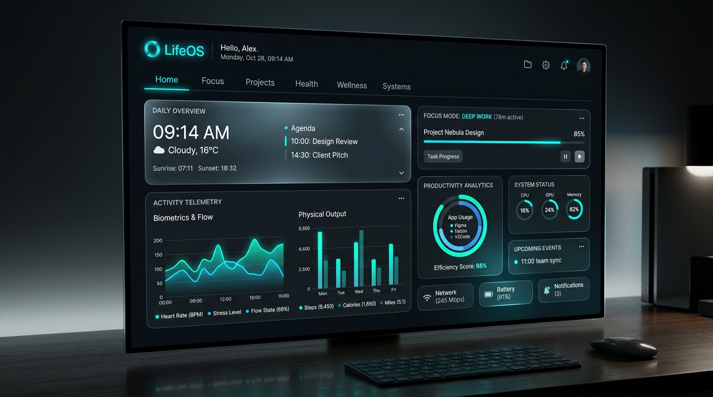

SHIPPED
01 // FLAGSHIP
LIFEOS
LifeOS — the first major project created and officially completed. A personal digital operating system organizing deep work focus, task flow, activity telemetry, and cognitive bandwidth into a minimal, distraction-free environment.